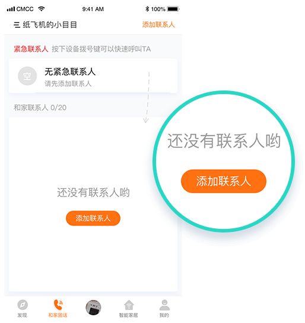
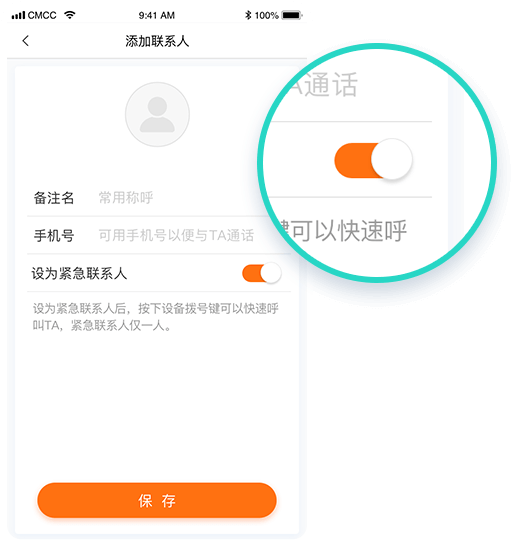
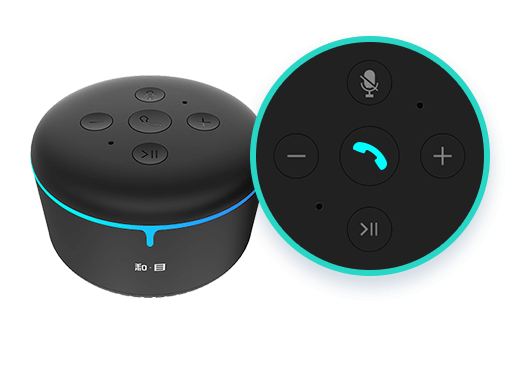

一
什么是紧急联系人
紧急联系人是指在中国移动开通和家固话业务后，可 以直接用小目智能音箱拨打电话，紧急联系人只能设 置一人。
二
添加紧急联系人
安装好和目语音助手APP，注册/登录后，和家固话页 面,点击"添加联系人"按钮。
在添加联系人的页面填写联系人的称呼（该称呼可用 于在唤醒小目后，发送拨打电话的语音指令）、手机 号等，并将紧急联系人的开关打开，保存即可。

三
拨打紧急联系人电话
紧急联系人是指在中国移动开通和家固话业务后，可 以直接用小目智能音箱拨打电话，紧急联系人只能设 置一人。

语音唤醒音箱
对小目说："你好小目，打电话给妈妈（紧急联系人
的备注名）"
四
如何下载和目语音助手APP
扫描以下二维码关注物联小智公众号，或在微信搜索“物联小智”，关注公众号后，可在公众号中找到安装文件。